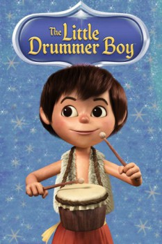

Country:United States, 25 minutes
Spoken languages:English
Genres:Animation, Drama, Family
Director(s):Jules Bass, Arthur Rankin Jr., Takeo Nakamura
Writer(s):Romeo Muller
Video Codec:Unknown
Number: 103

Certification:NR
Storyline:
After being kidnapped and escaping, young drummer boy Aaron searches for his camel and finds him in the Nativity of the Baby Jesus. Aaron gives Baby Jesus the only gift he has, a song on his drum.
Cast:
Greer Garson (voice of Narrator), Ted Eccles (voice of Aaron), José Ferrer (voice of Ben Haramed), Paul Frees (voice of Aaron's Father / Magi / Samson / Joshua / Baba / Others), June Foray (voice of Aaron's Mother)
Medium: Media file,
Location: D:\$RECYCLE.BIN\$RP4ESGP\The Little Drummer Boy.mp4
Loaned: No
Aspect ratio: Unknown